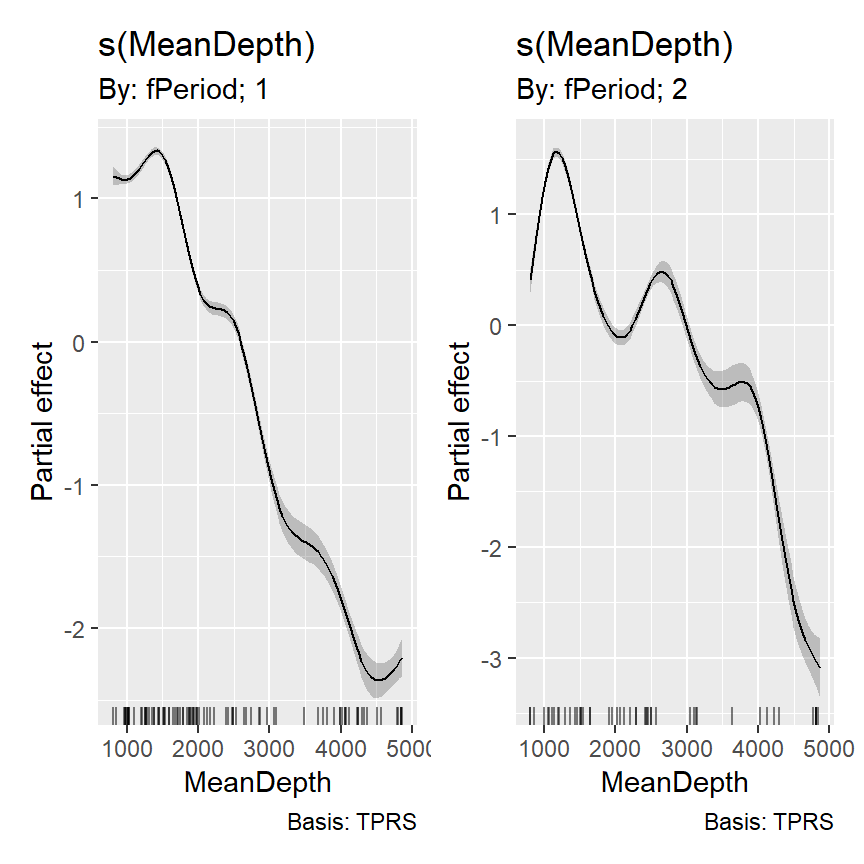

4 Introducing generalized additive models using deep-sea fishery data
4.1 From additive models to generalized additive models
前章までは目的変数の分布として正規分布のみを考えていた。本章では、こうした通常の加法モデル(additive model: AM)の目的変数の分布を正規分布以外に拡張した一般化加法モデル(generalized additive model)を解説する。GAMは一般化線形モデル(GLM)で1つ以上の変数がsmoother関数としてモデル化されたものである。
使用するsmootherは前章までと基本的に同じだが、罰則付きスプラインの最適化基準や交差検証の仕方、自由度の計算方法などいくつかの異なる点もある。
4.2 Review of GLM
まずはGAMの解説に移る前にGLMについておさらいする。より詳細な説明については他の書籍(Zuur 2009; 久保 2012; 松浦 2012; 馬場 2015; Dunn and Smyth 2018)を参照。
第2で行った漁業データ(Bailey et al. 2009)に対するモデリングでは、分散の不均等性に対処するために変数変換を行ったり、特殊な分散構造をモデルに取り入れたりした。GLMはこうしたことをせずに分散の不均等性に対処することができる。また、第2章ではデータの非線形性に対処する際に変数変換や多項式回帰を適用したりした。GAMはGLMと同様に分散の不均等性に対処しつつ、こうしたデータの非線形性にも対処できる。
GLMやGAMは以下の3つの要素からなる。
- 目的変数の分布。これによって目的変数の平均や分散が決まる。
- 共変量(説明変数)の関数(= 予測関数)
- 目的変数の平均と共変量(説明変数)をつなぐもの(= リンク関数)
4.2.1 Distribution
GLMでは、正規分布に加えてポワソン分布や負の二項分布、二項分布、ガンマ分布、逆正規分布などが目的変数の分布として使われる。ポワソン分布と負の二項分布は0以上のカウントデータに対して、二項分布は二値データや0から1の間をとる割合データに対して、ガンマ分布は正の連続値に対して、正規分布は全ての範囲の連続値に対して用いられる。また、あまり一般的ではないが逆正規分布は正の連続値に対して用いられる。これら6つがglm関数のfamily =として使用できる通常の分布である。
それでは、漁業データにはどの分布を当てはめるべきだろうか?魚の密度(Dens)は0以上の整数値である。0をとる可能性があるということはガンマ分布は適当ではない。
魚の密度(Dens)は魚の総捕獲量(TotAbund)を探索面積(SweptArea)で割ったものである。モデルでは、魚の総捕獲量を目的変数として用いることもできる。この場合、捕獲量は0以上の整数になるのでポワソン分布か負の二項分布が適当である。実際の分析では探索努力(具体的には探索面積)を考慮する必要があるが、ここではひとまず置いておく。
総捕獲量と探索面積のdotplot(第1.4.2節参照)を示したのが図4.1である。
fish %>%
mutate(sample_number = 1:n()) %>%
select(sample_number, SweptArea, TotAbund) %>%
pivot_longer(cols=c(2,3)) %>%
ggplot(aes(x = value, y= sample_number))+
geom_point(shape = 1, size = 2)+
facet_rep_wrap(~name, repeat.tick.labels = TRUE,
scales = "free_x")+
theme_bw()+
theme(aspect.ratio = 1,
strip.background = element_blank(),
strip.text = element_text(hjust = 0))+
labs(x = "", y = "Order of data")図4.1: Dotplot of Swept Area and TotAbund
また、総捕獲量と探索面積それぞれと水深の関係をプロットしたのが図4.2である。
fish %>%
select(MeanDepth, SweptArea, TotAbund) %>%
pivot_longer(cols=c(2,3)) %>%
ggplot(aes(x = MeanDepth, y= value))+
geom_point(shape = 1, size = 2)+
facet_rep_wrap(~name, repeat.tick.labels = TRUE,
scales = "free_y")+
theme_bw()+
theme(aspect.ratio = 1,
strip.background = element_blank(),
strip.text = element_text(hjust = 0))+
labs(x = "mean depth", y = "")図4.2: Scatterplot of swept area and total abundance versus mean depth.
さて、もし総捕獲量にポワソン分布を当てはめるとき、以下のように書ける(ポワソン分布では、期待値と分散が同じ値になる)。なお、\(TA_i\)はi番目のデータの総捕獲量を表す。\(E()\)は期待値を、\(var()\)は分散を表す。
\[ \begin{aligned} TA_i &\sim Poisson(\mu_i)\\ E(TA_i) &= \mu_i\\ var(TA_i) &= \mu_i \end{aligned} \]
総捕獲量を負の二項分布に当てはめるとすれば、以下のように書ける。負の二項分布ではパラメータ\(k\)(\(= 1/ \alpha\))を組み込むことでポワソン分布よりも大きな分散をとることを可能にしている。\(k\)が大きくなるほど負の二項分布はポワソン分布に近づく。多くの文献では\(\alpha\)が用いられているが、Rのglm.nb関数では\(k\)が用いられている(thetaとして出力される)。
\[
\begin{aligned}
TA_i &\sim NB(\mu_i, k)\\
E(TA_i) &= \mu_i\\
var(TA_i) &= \mu_i + \frac{\mu_i^2}{k} = \mu_i + \alpha \times \mu_i^2
\end{aligned}
\]
4.2.2 Predictor function
目的変数の分布を決定したら、どの変数を説明変数として含めるかを決め、GAMの場合はどの変数がsmootherとして用いられるかを決める。第2章では、次のような線形回帰モデルを考えた。GLMでも同じような予測関数を用いることができる。
\[ \eta_i = \alpha + \beta_1 \times Depth_i + \beta_2 \times Period_i + \beta_3 \times Depth_i \times Period_i \]
GAMの場合は、平滑化関数(smoother)を組み込むことができる。
\[
\eta_i = \alpha + f(Depth_i) + \beta_1 \times Period_i
\]
期間によって異なるsmootherを適用することもできる。
4.2.3 Link function
リンク関数は、目的変数の期待値と予測関数をつなぐものである。リンク関数を様々に変化させることで、目的変数の期待値がある範囲に収まるように変化させる。
例えば、例えば、ポワソン分布や負の二項分布の期待値は必ず正にならなくてはいけないので、これらのモデルではログ関数がリンク関数に用いられる。
\[
log(\mu_i) = \eta_i
\]
両辺に指数変換を施すと以下のようになる。これからわかるように、リンク関数にログ関数を用いることで期待値(\(\mu_i\))が必ず正の値をとるようになる。
\[
\mu_i = e^{\eta_i}
\]
正規分布では恒等関数(\(\mu_i = \eta_i\))が、二項分布ではロジット関数がリンク関数に用いられるのが一般的である。ロジット関数をリンク関数にすることで、目的変数の期待値は0から1の範囲に収まるようになる。ロジット関数は以下の通り。
\[ log(\frac{\mu_i}{1-\mu_i}) = \eta_i \]
4.3 Start with GLM or GAM ?
それでは、最初の分析としてはGLMとGAMのどちらを適用すべきだろうか。もし、GLMを適用したモデルの残差と説明変数の間に非線形の関係が明確にみられるなら、GAMを適用するのは理にかなっている。また、事前にデータ探索を行ったときに変数間に非線形なパターンが見られたらまずGAMを適用し、変数間の関係が線形か非線形かを見てみるということもできる。もし線形な関係が見られたら、そこからGLMを適用することもできる。
4.4 Results of Poisson and negative binomial GLM
本章では、まずGLMを適用するところから始める。まずはポワソン分布のGLMを適用する。モデル式は以下の通り。
\[ \begin{aligned} TA_i &\sim Poisson(\mu_i)\\ E(TA_i) &= var(TA_i) = \mu_i \\ log(\mu_i) &= \alpha + \beta_1 \times Depth_i + \beta_2 \times Period_i + \beta_3 \times Depth_i \times Period_i \end{aligned} \tag{4.1} \]
Rでは以下のように実行する。
fish <- mutate(fish, fPeriod = factor(Period))
M4_1 <- glm(TotAbund ~ MeanDepth*fPeriod, family = poisson(link = "log"), data = fish)モデルを実行したら、過分散(overdispersion)の確認を行う必要がある。ポワソン分布は期待値と分散が一致すると仮定しているが、この前提が満たされていない可能性がある。過分散のチェックを行うためには、ピアソン残差(\(E_i\))を計算する必要がある。期待値(\(E(TA_i)\))と分散(\(var(TA_i)\))は式(4.1)から得られる。
\[ E_i = \frac{TA_i - E(TA_i)}{\sqrt{var(TA_i)}} \]
過分散は以下のdispersion parameter(\(\phi\))を計算することで調べることができる。なお、\(N\)はサンプル数、\(k\)はパラメータ数である。もし\(\phi\)が1を超えていれば過分散が生じており、1以下であれば過少分散である。通常、\(\phi = 1.5\)くらいまでであれば問題ないと判断される(大東 2010)。
\[
\phi = \frac{\sum_{i=1}^k E_i}{N - k}
\]
今回のモデルでは、以下のように\(\phi = 110.5\)となり、明確な過分散が存在する。よってモデルがデータにうまく当てはまっていないことが分かる。過分散が生じる原因には、(1)モデルに入れるべき共変量や交互作用が入っていない、(2)外れ値がある、(3)リンク関数がデータに合っていない、(4)非線形なパターンがモデルで説明できていない、(5)ゼロ過剰がある、(6)ポワソン分布で仮定されるよりデータの分散が大きい、などがある。
## [1] 110.5165過分散の原因はモデルの結果を診断することで見つけることができる。図4.3はピアソン残差と水深の関係を期間ごとにプロットしたものである。水深の深いところでピアソン残差が0以下になる点が多いなど非線形なパターンがみられるので、ポワソン分布のGAMを適用した方がいいかもしれない。しかし、パターンはそこまで明確ではないので、GAMを適用するだけでは過分散の問題が解決されない可能性がある。総捕獲量にそもそも大きなばらつきがあることを考えると、負の二項分布を適用した方がいいだろう。よって、過分散とデータの非線形性という2つの問題に対処するため、負の二項分布のGAMを適用したほうがよいということになる。
data.frame(resid = resid(M4_1, type = "pearson"),
depth = fish$MeanDepth,
Period = fish$fPeriod) %>%
ggplot(aes(x = depth, y = resid))+
geom_point(aes(fill = Period),
shape = 21)+
geom_hline(yintercept = 0)+
theme_bw()+
scale_fill_manual(values = c("white", "black"))+
theme(aspect.ratio = 1)+
labs(x = "Mean sampling depth (m)",
y = "Pearson residuals")図4.3: Pearson residuals obtained by the Poisson GLM plotted versus sampling depth. Filled circles are observations from the second sampling period.
GAMを適用する前に、まずは負の二項分布のGLMを実行してみる。モデル式は以下の通り。
\[
\begin{aligned}
TA_i &\sim NB(\mu_i, k)\\
E(TA_i) &= \mu_i , \; var(TA_i) = \mu_i + \frac{\mu_i^2}{k} \\
log(\mu_i) &= \alpha + \beta_1 \times Depth_i + \beta_2 \times Period_i + \beta_3 \times Depth_i \times Period_i
\end{aligned} \tag{4.2}
\]
RではMASSパッケージのglm.nb()関数で実行できる。
\(\phi\)の推定値はほとんど0であり、過分散の問題が解決されたことが分かる。
## [1] 0.9815648図4.4はピアソン残差と水深の関係を期間ごとにプロットしたものである。ポワソン分布のGLMのときに存在したパターンはかなり解消されていることが分かる。
data.frame(resid = resid(M4_2, type = "pearson"),
depth = fish$MeanDepth,
Period = fish$fPeriod) %>%
ggplot(aes(x = depth, y = resid))+
geom_point(aes(fill = Period),
shape = 21)+
geom_hline(yintercept = 0)+
theme_bw()+
scale_fill_manual(values = c("white", "black"))+
theme(aspect.ratio = 1)+
labs(x = "Mean sampling depth (m)",
y = "Pearson residuals")図4.4: Pearson residuals obtained by the negative Binomial GLM plotted versus sampling depth. Filled circles are observations from the second sampling period.
ただし、ここまでいずれのモデルにおいても探索面積の影響を考慮することはできていなかった。次節ではこれに対処する方法について学ぶ。
4.5 Using offset in a GLM or GAM
ポワソン分布は、ある一定の時間\(\lambda\)の間に事象が起こる回数\(y\)を以下のように表すことができる。もし\(\lambda = 1\)ならば、先ほどのポワソン分布と一致する。\(\lambda\)あたりに発生する事象の回数の期待値は\(\mu \times \lambda\)である。すなわち、\(\mu\)は単位時間あたりに発生する事象の回数の期待値を表す。
\[ P(Y = y|\mu, \lambda) = \frac{e^{-\lambda \times \mu} \times (\lambda \times \mu)^y}{y!} \]
漁業データにおいても同様に、探索面積\(SA_i\)あたりの漁獲量\(TA_i\)がポワソン分布に従うとき、以下のように書くことができる。
\[
P(TA_i = y_i|\mu_i, SA_i) = \frac{e^{-SA_i \times \mu_i} \times (SA_i \times \mu_i)^{y_{i}}}{y_i!}
\]
このとき、単位面積当たりの漁獲絵用の期待値は\(E(\frac{TA_i}{SA_i}) = \frac{\mu_i}{SA_i}\)となる。ポワソン分布や負の二項分布モデルを考えるとき、ログ関数をリンク関数とし以下のように書くことができる。ここで、\(log(SA_i)\)をオフセット項という。ポワソン分布や負の二項分布モデルでもこのようにオフセット項を用いることで、割り算データを扱うことができるようになる。
\[ \begin{aligned} log(\frac{\mu_i}{SA_i}) &= \alpha + \beta_1 \times Depth_i + \beta_2 \times Period_i + \beta_3 \times Depth_i \times Period_i \Leftrightarrow \\ log(\mu_i) &= \alpha + \beta_1 \times Depth_i + \beta_2 \times Period_i + \beta_3 \times Depth_i \times Period_i + log(SA_i) \end{aligned} \]
ここで、探索面積をオフセット項に含めるということは、探索面積を2倍にすれば漁獲量も2倍になると仮定しているということには注意が必要である。もしこれが成り立たないのであれば、探索面積を共変量(説明変数)としてモデルに含める必要がある。今回は単純に単位面積当たりの漁獲量(= 密度)を考えているので、オフセット項を使用するということで問題ない。
4.6 Poisson GLM with offset
それでは、まずはオフセット項を含むポワソン分布のGLMを考えていく。モデル式は以下の通り。
\[
\begin{aligned}
TA_i &\sim Poisson(\mu_i)\\
E(TA_i) &= var(TA_i) = \mu_i \\
log(\mu_i) &= \alpha + \beta_1 \times Depth_i + \beta_2 \times Period_i + \beta_3 \times Depth_i \times Period_i + log(SA_i)
\end{aligned} \tag{4.3}
\]
Rでは以下のように実行する。
M4_3 <- glm(TotAbund ~ MeanDepth*fPeriod + offset(log(SweptArea)),
family = poisson(link = "log"),
data = fish)このモデルはパラメータ\(\phi\)が121.7もあり、オフセット項を含めても過分散の問題は解決しないことが分かる。
## [1] 121.69884.7 Negative binomial GLM with offset
そこで、オフセット項を含む負の二項分布モデルを考える。モデル式は以下の通り。
\[
\begin{aligned}
TA_i &\sim NB(\mu_i, k)\\
E(TA_i) &= \mu_i , \; var(TA_i) = \mu_i + \frac{\mu_i^2}{k} \\
log(\mu_i) &= \alpha + \beta_1 \times Depth_i + \beta_2 \times Period_i + \beta_3 \times Depth_i \times Period_i + log(SA_i)
\end{aligned} \tag{4.4}
\]
Rでは以下のように実行する。
\(\phi\)はほぼ1となり過分散の問題は生じていないことが分かる。
## [1] 0.9972456ただし、ピアソン残差と水深の関係を期間ごとにプロットした図4.5をみると、わずかに非線形なパターンが見て取れる(とくに期間2)。よって、GAMを適用した方が適切だと考えられる。
data.frame(resid = resid(M4_4, type = "pearson"),
depth = fish$MeanDepth,
Period = fish$fPeriod) %>%
ggplot(aes(x = depth, y = resid))+
geom_point(aes(fill = Period),
shape = 21)+
geom_hline(yintercept = 0)+
theme_bw()+
scale_fill_manual(values = c("white", "black"))+
theme(aspect.ratio = 1)+
labs(x = "Mean sampling depth (m)",
y = "Pearson residuals")図4.5: Pearson residuals obtained by the negative Binomial GLM with offset plotted versus sampling depth. Filled circles are observations from the second sampling period.
4.8 Poisson and negative binomial GAM with offset
まずはポワソン分布のGAMを適用する。smootherは第2章でやったように期間ごとに分けて推定する。モデル式は以下の通り。
\[
\begin{aligned}
TA_i &\sim Poisson(\mu_i)\\
E(TA_i) &= var(TA_i) = \mu_i \\
log(\mu_i) &= \alpha + f_1(Depth_i) + f_2(Depth_i) + \beta_1 \times Period_i + log(SA_i)
\end{aligned} \tag{4.5}
\]
Rでは以下のように実行する。
M4_5 <- gam(TotAbund ~ s(MeanDepth, by = fPeriod) + fPeriod + offset(log(SweptArea)),
family = poisson(link = "log"), data = fish)過分散はGLMと同じように調べられる。\(\phi\)はGLM同様に大きいので(100.6)、やはり負の二項分布を適用した方がよさそう。
## [1] 100.6062結果に出てくる2つの自由度(edfとRef.df)は自由度の定義の違いによるもの。\(\chi^2\)検定が残差逸脱度を利用してsmootherの有意性を判定している。smootherの自由度は一般化交差検証(GCV)スコアを用いて決定される。
##
## Family: poisson
## Link function: log
##
## Formula:
## TotAbund ~ s(MeanDepth, by = fPeriod) + fPeriod + offset(log(SweptArea))
##
## Parametric coefficients:
## Estimate Std. Error z value Pr(>|z|)
## (Intercept) -5.82135 0.01003 -580.39 <2e-16 ***
## fPeriod2 -0.49759 0.02043 -24.36 <2e-16 ***
## ---
## Signif. codes: 0 '***' 0.001 '**' 0.01 '*' 0.05 '.' 0.1 ' ' 1
##
## Approximate significance of smooth terms:
## edf Ref.df Chi.sq p-value
## s(MeanDepth):fPeriod1 8.887 8.995 13849 <2e-16 ***
## s(MeanDepth):fPeriod2 8.891 8.995 4697 <2e-16 ***
## ---
## Signif. codes: 0 '***' 0.001 '**' 0.01 '*' 0.05 '.' 0.1 ' ' 1
##
## R-sq.(adj) = 0.35 Deviance explained = 73.7%
## UBRE = 81.8 Scale est. = 1 n = 147推定されたsmootherは以下の通り(図??)。

続いて、負の二項分布のGAMを実行する。モデル式は以下の通り。
\[
\begin{aligned}
TA_i &\sim NB(\mu_i, k)\\
E(TA_i) &= \mu_i , \; var(TA_i) = \mu_i + \frac{\mu_i^2}{k} \\
log(\mu_i) &= \alpha + f_1(Depth_i) + f_2(Depth_i) + \beta_1 \times Period_i + log(SA_i)
\end{aligned} \tag{4.6}
\]
Rでは以下のように実行する。mgcvパッケージで負の二項分布をフィットさせる方法は2つある(performance iterationとouter iteration)。詳しくは?negbinで検索。performance iterationを利用する場合はfamily = negbin()、outer iterationを利用する場合はfamily = nb()を使用するよう。
前者ではまずsmootherのパラメータが推定され、\(\phi\)が1になるように\(k\)(Rではtheta)が推定される。この場合、一方で、後者は\(k\)がsmootherのパラメータと一緒に最尤推定法または制限付き最尤推定法で推定される。
今回は後者の方法でthetaを推定する。Rでは以下の通り実行できる4。
M4_6 <- gam(TotAbund ~ s(MeanDepth, by = fPeriod) + fPeriod + offset(log(SweptArea)),
family = nb(link = "log"), data = fish)モデルの結果は以下の通り。\(k = 2.048\)と推定され、モデルはデータのばらつきの69.4%を説明している。
##
## Family: Negative Binomial(2.048)
## Link function: log
##
## Formula:
## TotAbund ~ s(MeanDepth, by = fPeriod) + fPeriod + offset(log(SweptArea))
##
## Parametric coefficients:
## Estimate Std. Error z value Pr(>|z|)
## (Intercept) -5.77295 0.07181 -80.393 < 2e-16 ***
## fPeriod2 -0.45494 0.12417 -3.664 0.000249 ***
## ---
## Signif. codes: 0 '***' 0.001 '**' 0.01 '*' 0.05 '.' 0.1 ' ' 1
##
## Approximate significance of smooth terms:
## edf Ref.df Chi.sq p-value
## s(MeanDepth):fPeriod1 2.810 3.493 324.9 <2e-16 ***
## s(MeanDepth):fPeriod2 3.019 3.739 158.4 <2e-16 ***
## ---
## Signif. codes: 0 '***' 0.001 '**' 0.01 '*' 0.05 '.' 0.1 ' ' 1
##
## R-sq.(adj) = 0.318 Deviance explained = 69.4%
## -REML = 880.49 Scale est. = 1 n = 147\(\phi\)は1.10であり、モデルに過分散の問題はないよう。
## [1] 1.100135smootherを期間ごとに分ける必要があるかを調べるため、期間ごとにsmootherを分けないモデルを作成して先ほどのモデルと比較する。\(k\)(theta)の値を固定する必要があるため、
M4_7 <- gam(TotAbund ~ s(MeanDepth) + fPeriod + offset(log(SweptArea)),
family = nb(link = "log", theta = 2.048), data = fish)AICでモデル比較をしたところ、期間ごとにsmootherを分ける方がAICが低いことが分かる。
M4_6によって推定されたパラメータを基にモデル式を描くと以下のようになる。
\[
\begin{aligned}
TA_i &\sim NB(\mu_i, 2.048)\\
E(TA_i) &= \mu_i , \; var(TA_i) = \mu_i + \frac{\mu_i^2}{2.048} \\
Period1: log(\mu_i) &= -5.77 + f_1(Depth_i) + log(SA_i)\\
Period2: log(\mu_i) &= -5.77 -0.45 + f_2(Depth_i) + log(SA_i)
\end{aligned} \tag{4.7}
\]
期間ごとに推定されたsmootherを描くと図4.6のようになる。
図4.6: Estimated smoother for depth
図4.7はモデルから推定された回帰曲線を実際のデータ上に描いたものである。
nd_M4 <- crossing(MeanDepth = seq(min(fish$MeanDepth), max(fish$MeanDepth), length = 100),
fPeriod = factor(c(1,2))) %>%
mutate(SweptArea = ifelse(fPeriod == "1", mean(fish %>% filter(fPeriod == "1") %>% .$SweptArea),
mean(fish %>% filter(fPeriod == "2") %>% .$SweptArea)))
fitted_values(M4_6, data = nd_M4) %>%
ggplot(aes(x = MeanDepth, y = fitted))+
geom_line(aes(linetype = fPeriod))+
geom_ribbon(aes(ymin = lower, ymax = upper, fill = fPeriod),
alpha = 0.3)+
scale_fill_manual(values = c("grey21","grey65"))+
new_scale_fill()+
geom_point(data = fish %>% mutate(fPriod = factor(Period)),
aes(y = TotAbund, fill = fPeriod),
shape = 21)+
scale_fill_manual(values = c("black","white"))+
scale_linetype_manual(values = c("solid", "dashed"))+
labs(y = "Total abundance", x = "Mean depth (m)")+
theme_bw()+
theme(aspect.ratio = 1)+
guides(fill = guide_legend(override.aes = list(size = 3)))図4.7: Fitted values for the negative binomial GAM with offset variable.
最後にモデル診断を行う。ピアソン残差とモデルから推定される予測値、水深、期間の関係とピアソン残差のヒストグラムをプロットしたのが図4.8である。明確なパターンは見られないよう。
data.frame(resid = resid(M4_6, type = "pearson"),
MeanDepth = fish$MeanDepth,
fitted = fitted(M4_6),
Period = fish$fPeriod) -> dat_resid
dat_resid %>%
ggplot(aes(x = fitted, y = resid))+
geom_point(shape = 21,
aes(fill = Period))+
scale_fill_manual(values = c("black","white"))+
theme_bw()+
theme(aspect.ratio = 1)+
labs(x = "Fitted values", y = "Pearson residuals",
title ="A") -> p1
dat_resid %>%
ggplot(aes(x = MeanDepth, y = resid))+
geom_point(shape = 21,
aes(fill = Period))+
scale_fill_manual(values = c("black","white"))+
geom_hline(yintercept = 0,
linetype = "dotted")+
theme_bw()+
theme(aspect.ratio = 1)+
labs(x = "Mean depth (m)", y = "Pearson residuals",
title ="B") -> p2
dat_resid %>%
ggplot(aes(x = Period, y = resid))+
geom_boxplot(outlier.shape = 1)+
stat_boxplot(geom = "errorbar",
width = 0.2)+
theme_bw()+
theme(aspect.ratio = 1)+
labs(x = "Period", y = "Pearson residuals",
title ="C") -> p3
dat_resid %>%
ggplot(aes(x = resid))+
geom_histogram(fill = "white", color = "black")+
theme_bw()+
theme(aspect.ratio = 1)+
labs(x = "Pearson residuals", y = "Frequency",
title ="D") -> p4
(p1 + p2)/(p3 + p4)図4.8: A: Pearson residuals versus fitted values. B: Pearson residuals versus mean depth. C: Pearson residuals versus period. D: Histogram of the Pearson residuals.
QQプロットもおおむねよく当てはまっている?
4.9 What to present in paper
第2.10を参照。